She is in heat for eight hours.
Cowllar watches every cow through the night and names the one to inseminate in the morning. Miss her and the farm waits another 21 days.
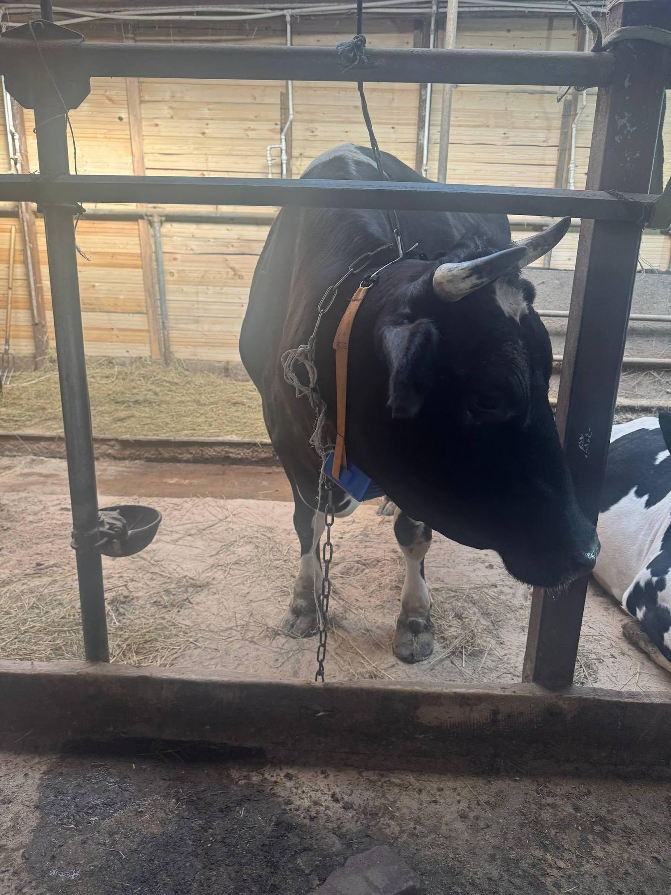
Moscow oblast, May 2026
One missed heat is
10,500 roubles and three lost weeks.
A cow signals for six to eight hours. A third of cows barely signal at all. Nobody can watch two hundred animals through a February night, so the calendar takes over and the guessing starts.
Move the sliders to your farm. Cows cycle roughly every 21 days, so each animal offers about 17 chances a year. Published miss rates in Russian herds run from 40 to 62 percent, and reach 83 percent in hard frost.
Lost to heats that nobody saw, at 10,500 roubles per miss.
Window where standing heat is clearly visible. Most of it falls at night.
Cows ovulate with signs too weak to see. This is subestrus, and eyes cannot fix it.
Inseminations that land at the wrong hour, even on farms that watch carefully.
We asked four farms.
Four said yes.
Before any of this was built we sat with the people who would use it. These are their words, not ours. The one farm that said no has twelve cows and knows every one of them by name.
We already have collars for activity and chewing, but they are inconvenient for heat and we do not trust them. Pedometers were tried and they got lost. Skips happen often, and the cost is a longer service period, extra hormones and less milk. Health and heat monitoring in one device would be ideal.
Plemzavod Maisky, breeding plant
interviewed by Anastasiya, spring 2026
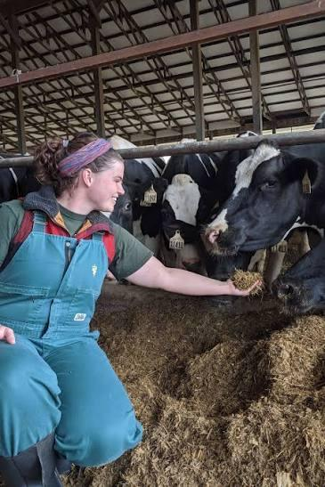
Seven interns told us the same story.
Students who spend their summers on farms, between them at ROTA AGRO, Sovhoz im. Lenina, EkoNiva and RumelkoAgro. We asked what goes wrong with the method they use now.
Hidden estrus, a considerable number of omissions.
Too many factors affect the behaviour and the reaction of the body. It is hard to keep track of the same cow, because they all move around the same shed, and for many of them the moment passes in a quiet phase. If a cow is sick or injured, attention goes there instead.
Inaccuracy.
What we promise the person
who walks the barn at 5 am.
Not a dashboard full of charts. Four plain commitments, each one testable on your farm.
We name the cow.
cow number, not a herd averageThe alert says Cow 23, not "activity is elevated in group B". You walk to one animal, confirm, and inseminate.
We give you a window.
12 to 24 hours of lead timeThe collar watches movement, rumination and skin temperature against that cow's own seven day baseline, then tells you when her window opens and when it closes.
It works where your wifi does not.
classification on the collarBehaviour is classified on the device and written to a card. The collar carries its own wifi, so a phone or laptop can collect a day of data standing next to the animal.
It finds the quiet ones.
rumination and sound, not only stepsPedometers miss silent heat because silent heat has few extra steps. We add chewing and vocal sound, which is where the third of cows that never mount give themselves away.
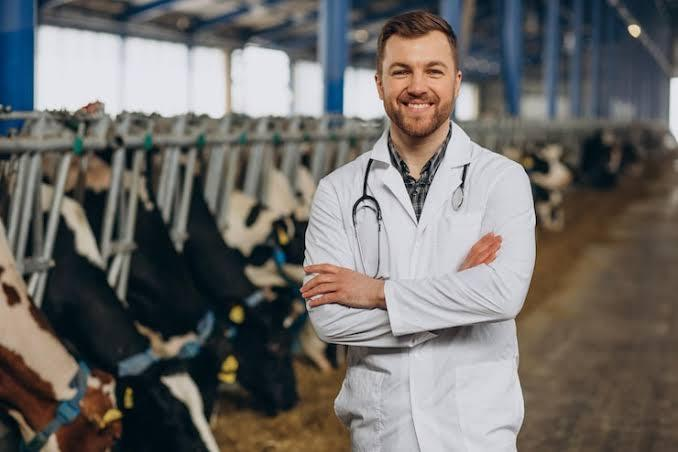
One person covers the whole herd.
On the farms we are aiming at, three hundred cows and up, a single veterinarian or reproduction technologist carries the breeding decisions. They do not need more numbers on a screen. They need to be told which animal to walk to, before the window shuts.
Everything on this page is built backwards from that one moment.
Heat detection exists.
It keeps missing the quiet ones.
Pick what your farm uses now, or what a salesperson offered you last month, and see the honest comparison.
A person watching
how it finds heat
Staff watch the herd and mark the cows that stand to be mounted, usually twice a day between everything else that needs doing.
where it loses her
Signs last six to eight hours and most of them fall at night. A third of cows barely show anything at all, and in hard frost the miss rate climbs to 83 percent.
| capability | them | Cowllar |
|---|
Cost: staff time, roughly one hour per checkup.
Six parts, one strap,
built by hand in Moscow.
Every component was chosen so the whole collar stays under fifty dollars in parts and keeps running with no network, no subscription and no cloud.
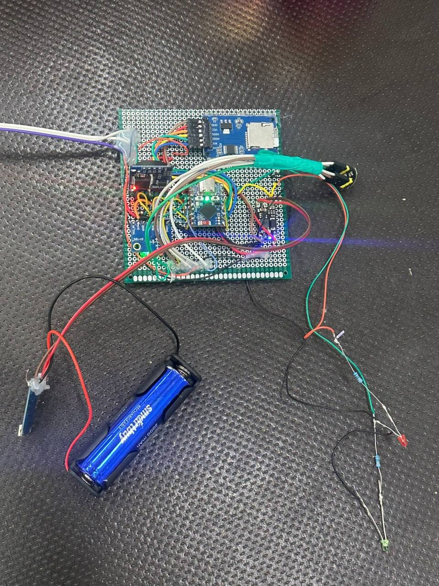
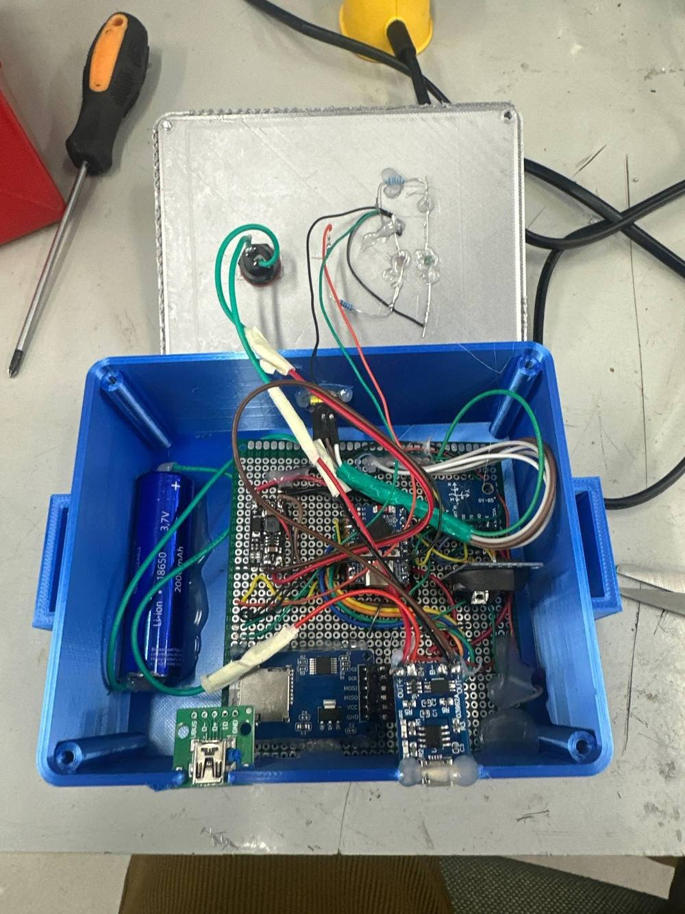
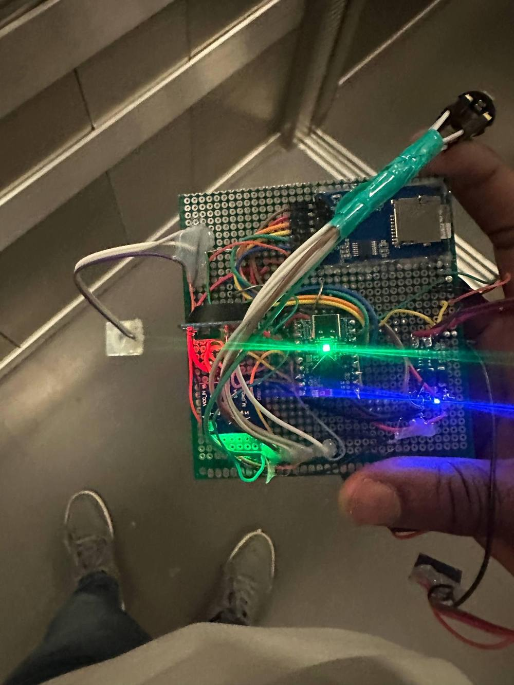
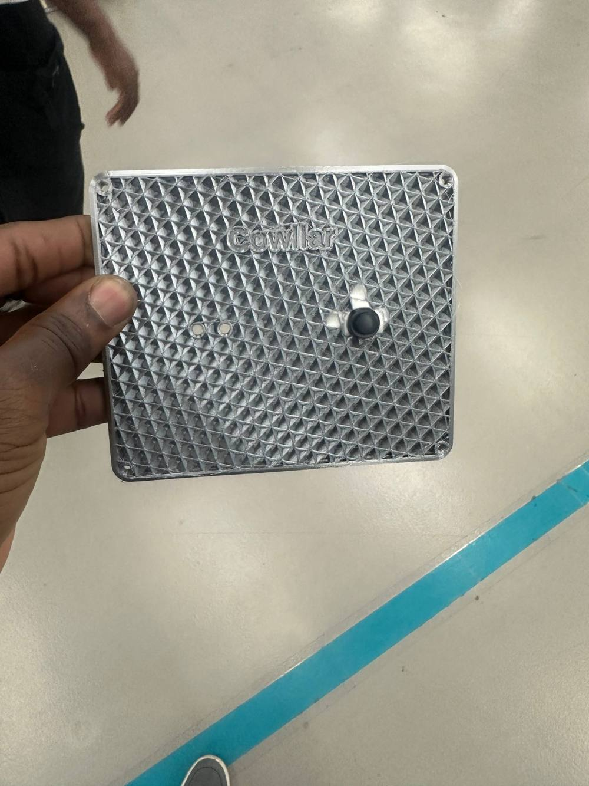
Motion, 25 times a second
A three axis accelerometer and magnetometer on the neck. Walking, standing, lying and mounting each leave a different signature. When a cow comes into heat this signal doubles or triples, and that is the loudest thing on the animal.
From a shaking strap
to a name on your phone.
Four stages. The first three run on the collar, the fourth runs on a laptop in the office. Tap a stage to see what happens to the signal.
Raw signal, 25 rows a second
The collar writes one row 25 times a second: three axes of acceleration, magnetometer, skin temperature and a sound level, each with a timestamp. A single day is about two million rows, which is why nothing useful happens until the next stage.
We tested it on cows the model had never met.
Six cows from a public Japanese dataset recorded at the same 25 Hz on the same part of the body. We trained on five and tested on the sixth, then rotated. No cow ever appears in both sides of the split, so nothing is memorised.
Pooled across all six held out cows, four behaviour classes, macro F1 of 0.67.
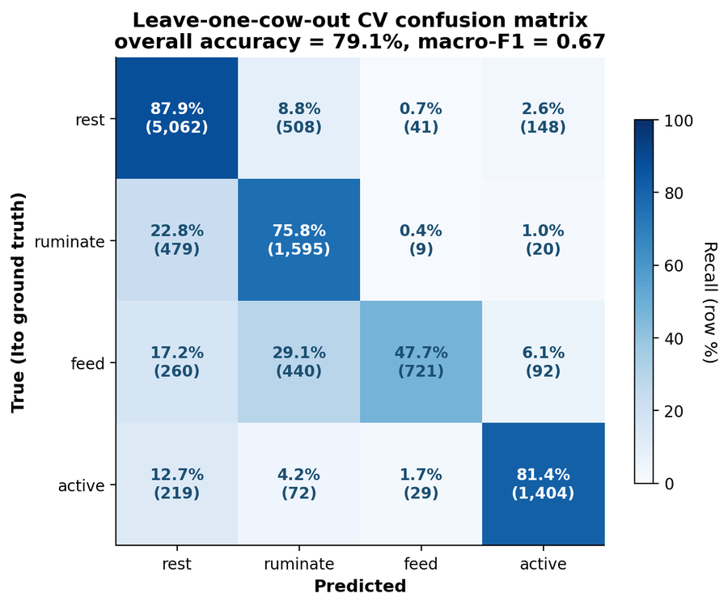
What this proves today
- The hardware records four sensors on a live animal for a full working day.
- The pipeline runs end to end, from raw rows to a named behaviour.
- Behaviour transfers across animals the model has never seen, at 79.1 percent.
- The farmer can collect a day of data with a phone, standing next to the cow.
What we have not earned yet
- Estrus alerts checked against a vet's confirmation. The scoring is wired, the labels are not collected.
- Russian dairy breeds. Our validation cows are Japanese Black beef.
- A week of continuous wear. Our record is eleven hours before the cow won.
- More than one animal at a time. The July pilot is where that changes.
Three days of one cow,
in fifteen seconds.
Press play. Watch movement climb, chewing fall and skin temperature lift, then watch the score cross the line and the phone go off while there is still a day to act.
Cow 23, hours 0 to 72
Modelled from published estrus behaviour to show the scoring logic. Sensor traces here are an illustration, not a recording.
No action needed
Cow 23 is inside her normal range. The collar keeps counting and says nothing, which is most of the time and exactly the point.
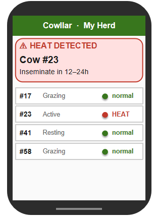
And this is the part the farmer actually opens.
The dashboard runs on a laptop in the office. It shows the herd first, then one cow, then the history behind the flag so a technologist can disagree with the machine before walking out to the barn.
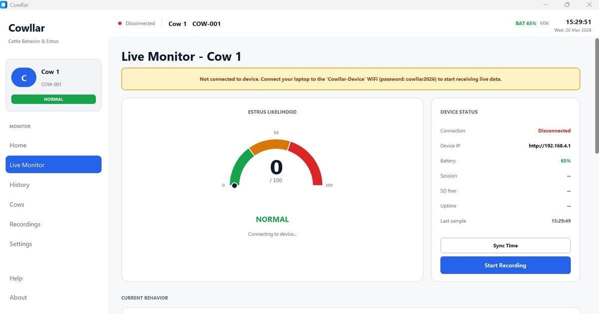
Eleven hours on a cow.
Then she broke it.
A partner farm in Moscow oblast let us strap the collar to an animal for a working day. We got the data out, and we got the failure we needed to design version two.
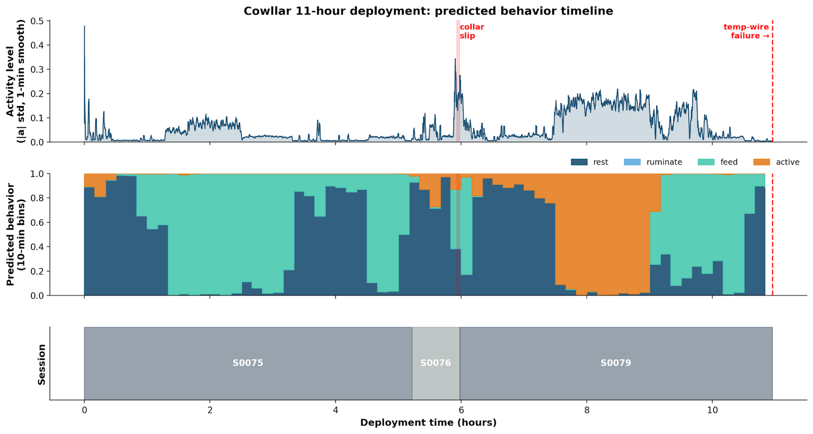
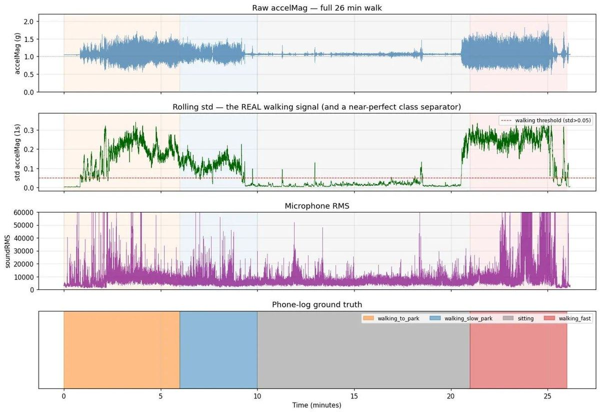
The field log behind this page
What version two fixes,
and who is doing it.
The cow wrote our roadmap for us. Smaller, tougher, and worn by more than one animal for more than one day.
Hardware
- Smaller and lighter housing, less for a cow to catch and pull
- Impact resistant shell instead of printed PETG
- Strain relief on the temperature probe that fatigued
- Battery gauge on board, so the farm sees charge before a deployment
Data and model
- A week long pilot on several cows in July
- Vet confirmed heat events, the labels we are missing
- Feeding class rebuilt, it is the weakest column in the matrix
- Fine tuning on Russian dairy breeds, not only the public set
On the farm
- One base unit per barn, collars sync when the cow walks past
- Phone alerts for the technologist who is already outside
- Tie stall farms tested separately, where movement says less
- Price held under fifty dollars of parts per collar
Area 51
Interested? Email us: area51@cowllar.com
Prototype: this button is a demo and does not send anything yet.